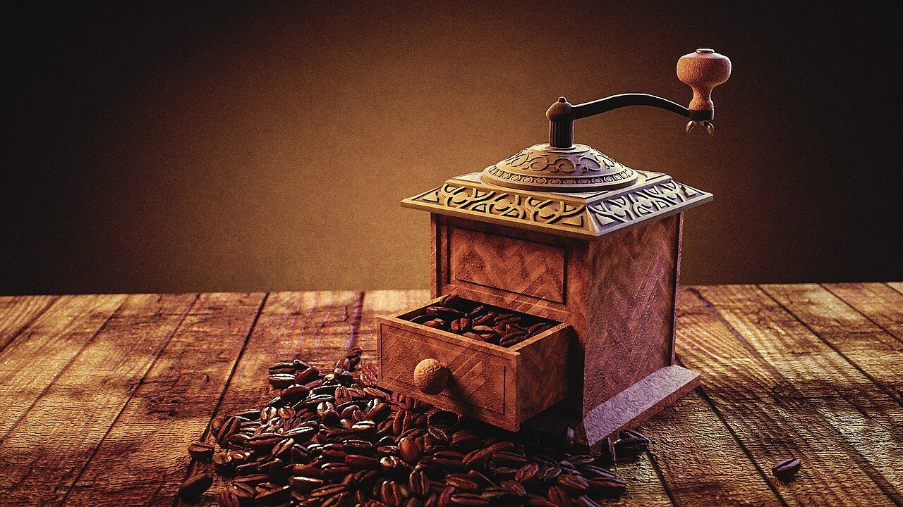

ニューグリーンカフェ 緑茶房
1
ホーム
2
店のこと
3
メニュー
4
口コミ
5
アクセス
アクセス
お店の場所
確認できたのは所在地とInstagramです。そのほかは準備中。
ご案内
所在地
所在地
〒917-0063
福井県小浜市小浜酒井９５−２
電話
準備中
営業時間
準備中
定休日
準備中
ご予約
準備中
駐車場
準備中
SNS
Instagram @newgreencafe_obama
地図
Googleマップ
Instagram
場所を見る

一部の写真はフリー素材のイメージです。実際の店内・商品写真は貴店ご提供のものに差し替えます